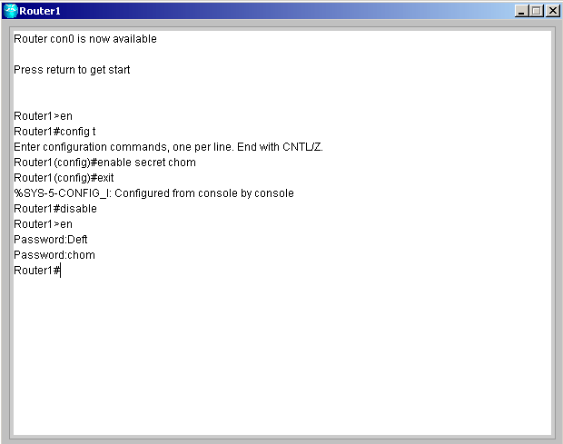
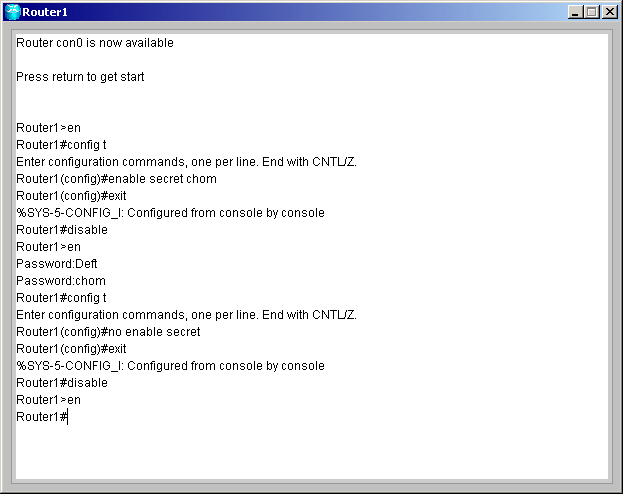

| Setting your password | ||
| การทดลองนี้เป็นการทดลองสำหรับกำหนดพาสเวิร์ดในส่วนต่างๆ | ||
| 1. ล็อกอินเข้าสู่เราเตอร์แล้วเปลี่ยนเป็นโหมด Privileged EXE ด้วยคำสั่ง Enable หรือ En | ||
| 2. เข้าสู่โหมด Global Configuration โดยใช้คำสั่ง Config t | ||
| 3. กำหนดพาสเวิร์ดสำหรับการเปลี่ยนโหมดจาก User EXE ไปเป็น Privileged EXE ด้วยคำสั่ง Enable secret <Your password> เช่น enable secret apple หลังจากนั้นให้ลองออกไปที่ User EXE โหมดแล้วลองเปลี่ยนโหมดเป็น Privileged EXE | ||
|
 |
||
| 4. หากต้องการลบพาสเวิร์ดให้เข้าไปยัง Global Configuration โหมดแล้วใช้คำสั่ง No Enable Secret แล้วกด Enter หลังจากนั้นให้ลองออกไปที่ User EXE โหมดแล้วทดลองเปลี่ยนโหมดเป็น Privileged EXE | ||
|
 |
||
|
สำหรับโหมดการทำงานทั้งหมดของเราเตอร์สามารถดูได้ที่
Command
|
||